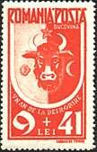
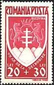
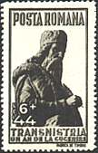
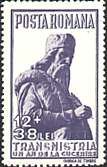
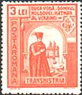
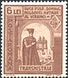

ROMANIA IN THE WW II
THE "LIBERATION" OF BUCOVINA AND TRANSNISTRIA
The set shown below commemorates the first anniversary of liberation of Bucovina by Romanian troops. It was issued on November 1st, 1942 and shows Bucovina's coats of arms and regions. The grin of the national symbolic animal, the Bull, shown on the first stamps, looks full of promises... And indeed, the occupation of the capital of Bucovina, Czernovitz (Cernauti) on 5th of July 1941 started with a three days permission given to the glorious army of the National-Legionary State to rob and violate the part of the civil population considered as hostile, i.e. of the Jews. Later a small part of the city will be transformed by the Romanian government in a ghetto for the whole Jewish population.
 |
 |
Transnistria was the name given to the territory found between the rivers Dniestr and Bug, and occupied by the Romanian and German troops. The stamps shown below on the left celebrate the first anniversary of the conquest of Transnistria. They were for use only in this territory, which included Odessa. Date of issue: December 1942; Scott B192-194. They display the statue of the historian Miron Costin (1633-1691), after a monument in Iasi. The both stamps on the right were issued on July 2, 1943 (Sc. 554-557) and commemorate the second anniversary of the annexation of Transnistria. The Prince Duca (dead 1683), displayed on both stamps, was Prince (Domn) of Moldova and Getman (Hatman = Ataman = Ruler) of Ukraine.
 |
 |
 |
 |
The Antonescu regime used two different methods in its treatment of the Jews - one applied to the Jews of Bessarabia and Bucovina and another to the Jews of the Regat. Only in the former did he implement a policy of mass murder. On June 12, 1941, Hitler revealed to Antonescu his solution to the problem of the "Jews of the east." The Romanian army was ordered to imprison the Jews living in the cities, and the gendarmerie was assigned the task of killing every Jew found in the rural areas. In fact, the annihilation of the Jews was carried out by German and Romanian army units, assisted by Einsatzgruppe D. In the first phase of the operation 160,000 Jews were killed, with local Ukrainians and Romanians taking part in the slaughter. On September 15, 1941, Antonescu ordered the expulsion of the 150,000 surviving Jews to Transnistria. En route, tens of thousands died and Transnistria became a mass grave. The Romanian army and gendarmerie also took part in the killing of tens of thousands of Ukrainian Jews.
Just to mention at the end that the Romanian stamps related to the WW II, Antonescu, Codreanu and to the occupied territories were prohibited in the communist Romania, i.e. during over 40 years, more exactly between 1947 and 1989. The displaying or commercialization of them was severely punished, so many collectors feared persecutions and destroyed them during that difficult period.
Source: Microsoft Encarta, Simon Wiesenthal Multimedia Learning